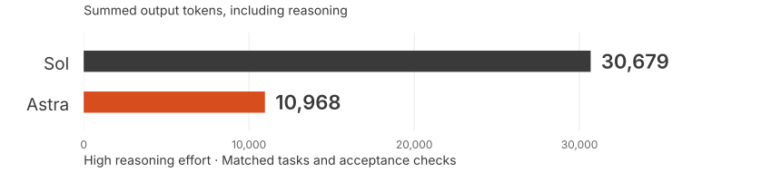
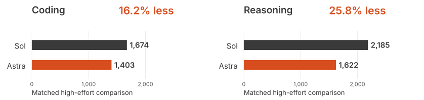
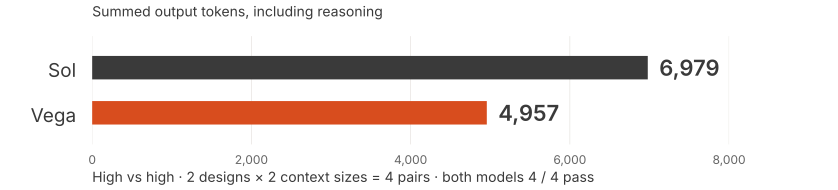
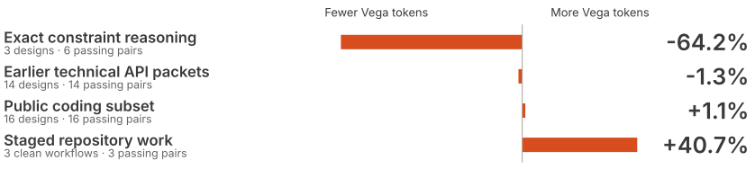

GPT-6 Astra vs GPT-5.6 Sol
Where Astra improves
on Sol.
Selected early-access results from our
API and Codex evaluations at Eliza.
18.4M recorded tokens across both models
Early access, real experiments · Teja
API · Astra vs Sol · Exact reasoning
Exact reasoning.
64.2% fewer output tokens.

Compared with Sol. The same acceptance checks passed.
API and Codex · Separate evidence surfaces
Less output than Sol.
In Codex, too.
Astra vs Sol · Output tokens, including reasoning

API · Astra vs Sol · Long context
Long context.
29.0% fewer output tokens.

Longer context. The same acceptance checks passed.
Practitioner observations · Codex
A more natural
delegation workflow.
Eliza teammates described Astra using
subagents more naturally and needing
less steering on longer implementations.
A practitioner signal worth testing next.
Direct API · Astra output relative to Sol
Match the model
to the task.

Same effort within each row: high vs high.
An inspectable evaluation
The evidence should
travel with the claim.
Task
Save the prompt.
Define acceptance.
Record effort and limits.
Run
Keep provider usage.
Separate API and Codex.
Record every outcome.
Review
Inspect by task family.
Check human acceptance.
Share the evidence.
What we are excited to explore next
A promising upgrade.
For the right tasks.
On selected tasks, Astra used
fewer output tokens than Sol
with the same checks passed.
Next: longer workflows and more autonomous execution.
What are you seeing in your own builds?